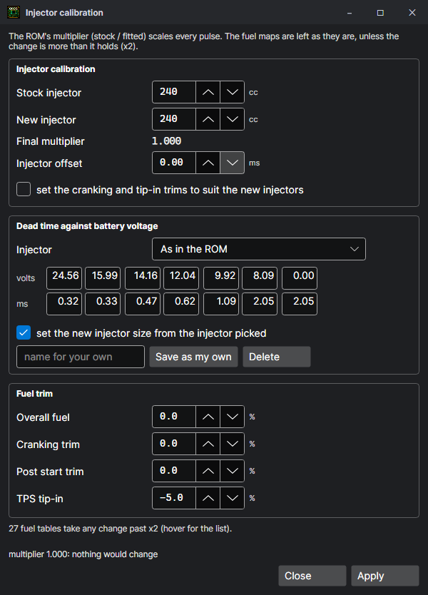

Definitions, Detect and tools
How the program knows where a ROM's maps are and what their numbers mean, and the tools on the calibration editor's Tools menu.
Definitions
A definition names a table or a setting: where it is in the ROM, what each cell is (a byte, a word, signed or not, a single bit), its size, the formula that turns the stored number into real units (ms, degrees, rpm, kPa, °C…), its axes, and what it does. They come from:
- The source's annotations — a .asm with
;@lines (HTS120, the skeleton and its modules) arrives with every map and setting named. - Detect — for a ROM without them (a .bin, a stock ROM), see below.
- A definitions file — Tools > Import… reads one; a .bin's definitions are kept in a file beside it, and in a project.
- By hand — Tools > Add, and the Definition form under a table.
Detect
Tools > Detect finds the maps by reading the code, not by looking at fixed addresses: it follows the routines that look tables up and reads their shapes, axes and scalings from the instructions. It also lines an unknown ROM up against the labelled reference ROMs in Templates/References (P30, P13, P72, P08 and HTS115; a P13 ROM against the P13 only, as it runs on another processor): Honda ECUs of one generation share most of their code, so the instruction that reads a table in one reads the same table in the other, at a different address. Settings > General can offer Detect whenever a ROM is opened.
Formulas
The built-in formulas are the scalings the established tuning software uses, named for what they convert (rpm_period_word, ign_advance, map_mbar, honda_temp_c, tps_pct…). A definition can also carry its own expression in x (the stored number), with its inverse.
The Tools menu
| Entry | Does |
|---|---|
| Detect | Find the maps and settings by reading the code (above). |
| Injector size… | New injectors: the old size and the new one, the injector offset, the dead time against battery voltage — pick the injector from 138 presets (its size fills in too) or type its 7 points from the data sheet, and Save as my own to pick it again on any ROM and in the Set-up wizard — and the fuel trims. The size change is made once, the way the ROM does it: a skeleton ROM's injector size setting, an HTS ROM's multiplier (the maps take anything past the x2 it holds), or the fuel maps rescaled when the ROM has neither. A preview says what changes; one undo step. |
| MAP sensor size… | A 2, 2.5 or 3 bar sensor: the load scaling changed so the maps read the new sensor right. |
| Scale… | Rescale a map's axis or a fuel map's column multipliers, keeping what the engine gets. |
| O2 / knock tables… | The datalog's O2 and knock readings averaged into grids shaped like the fuel map, and the corrections they ask for. |
| Add / Delete | Define a table or setting by hand, or remove a definition (never the bytes). |
| Import… / Export definitions (JSON)… | Definitions in and out as a file of their own. |
| Export TunerPro XDF… | The definitions as an XDF, for TunerPro. |
| Save .bin… | The ROM as a 32 KB image with its checksum right, ready for a chip or an emulator. |
| Compare… | This ROM against another: see Compare. |
| Import maps… | The tune from another ROM into this one: see Import maps. |

Feature patches
Changes that add or remove a behaviour rather than a value — a trouble code off, the lamp off, known fixes to a base ROM. Every patch carries the bytes it expects and writes only where it finds them, and taking one away puts back exactly what was there.